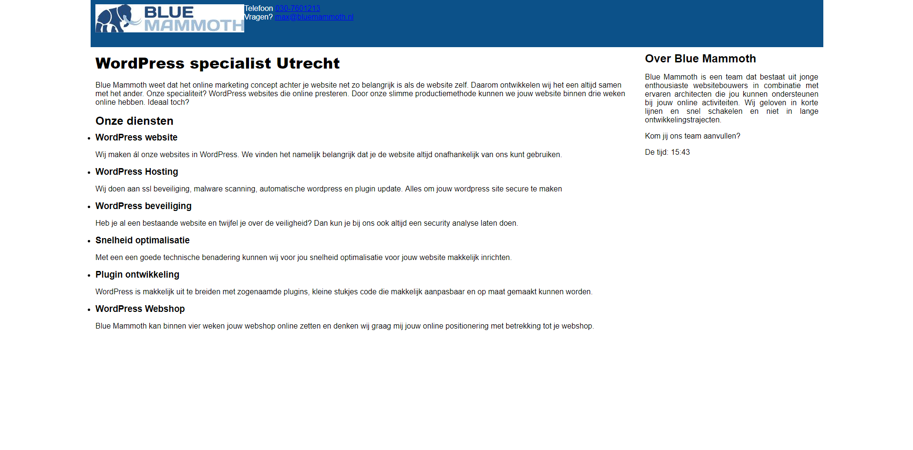
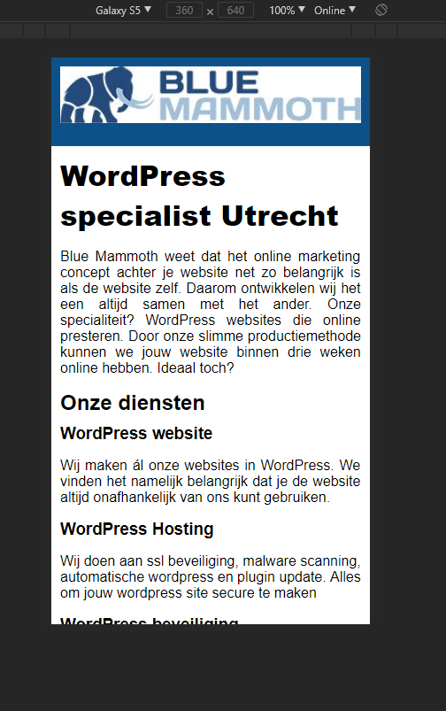

WordPress specialist Utrecht
Probeer de volgende opdrachten te maken:
- Het JavaScript bestand “script.js” lijkt niet op de pagina te werken zorg ervoor dat deze goed zijn werk doet!
- De sidebar hoort naast de content te staan (zie voorbeeld hieronder).
Zoek uit waarom dit niet het geval is en los het op.
Voorbeeldpagina van de desktop website
 - Maak de pagina responsive voor mobiel. Omdat de meeste mensen tegenwoordig websites bezoeken op hun mobiel zal de pagina er ook goed uit moeten zien op mobiel.
Voorbeeldpagina van de mobiele website
 - BONUS: Teksten staan niet netjes uitgelijnd ten opzichte van elkaar. Maak er een mooie layout van.